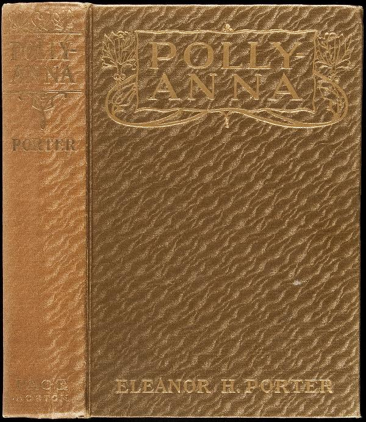

Pollyanna
Yazarı : Eleanor H.Porter
Türü : Roman, Çocuk Edebiyatı, Kurgu
Sayfa sayısı : 310
Bayan Polly Harrington kendisine gelen bir mektupla, hiç görmediği yeğeninin yapayalnız kaldığını öğrenir ve onunla yaşamasına müsaade eder. Yardımcısı Nancy'den yeğeni Pollyanna için bir oda hazırlamasını ister. Nancy, söylenileni yerine getirir, odayı hazırlar ancak küçük kıza tavan arasındaki bu odanın hazırlanmasından hiç memnun değildir. Bayan Polly kasabanın zenginlerindendir ve yeterince büyük bir evi vardır. Bu küçücük, gösterişsiz ve çok sıcak olan odanın Pollynanna'ya ayrılmasına anlam verememiştir.
Pollyanna odasına çıktığında hayal kırıklığı yaşar. Yerde halı, duvarlarda tablolar ve ayna yoktur. Penceredeki manzarayı fark ettiği anda mutlu olur ve tablo olmayışına üzülmekten vazgeçer. Sonra yüzündeki çilleri de görebileceği bir ayna olmadığı için sevinir. Polyanna oda çok sıcak olduğu için camı açar, içeri giren sineklere aldırmaz ve camın önündeki kocaman ağaca tırmanır. Aşağı indiğinde evin karşısındaki kayanın tepesine çıkmak için koşmaya başlar. Yemek saati gelir ve Pollyanna hala gelmediği için sinirlenen teyzesi Nancy'e, ona ceza olarak ekmek ve süt vermesini söyler. Pollyanna'yı bulamayan Nancy bahçeye çıkınca Bay Tom'a küçük kızın evde olmadığını söyler. Kayalıklarda onu gören Nancy, Pollyanna'yı almaya gider. Teyzesinin ona çok kızdığını ve ceza olarak akşam yemeğinin ekmek ve süt olduğunu söyler. Pollyanna ise buna çok sevindiğini çünkü ekmekle sütü çok sevdiğini söyler. Her şeye sevindiğini söyleyen Nancy'e bir bebek isterken yardım sandıklarından çıkan koltuk değneklerinden bahseder. Ve bu koltuk değneklerine ihtiyacı olmadığı için sevinmesi gerektiğini söyleyen babasının başlattığı bu oyunu anlatır. Nancy de bu oyuna katılacağını söyleyince çok mutlu olur.
Sürekli siyahlar giyen bir kadın o gün mavi bir yaka takar ve bunu Pollyanna'ya iletmesini söyler teyzesine. Bir başkası eşiyle ayrılmayacaklarını, diğeri artık üzgün olmadığını, bir başkası kalan iki dişine sevindiğini, Bayan Snow'un tutan elleri için sevindiğini ve battaniye ördüğünü iletmesini isterler ve örnekler böylece çoğalır. Ve Jimmy'nin Bay Pendleton'la yaşamaya başladığını öğrenmesi onu her şeyden çok mutlu eder. Anlatılanların bazılarından bir şey anlamayan Bayan Polly, Nancy'e bu oyunun ne olduğunu sorar. Nancy ona koltuk değnekleriyle başlayan bu oyundan bahseder ve neredeyse bütün kasabanın oynadığını söyler. Bayan Polly, Pollyanna'nın yanına gittiğinde artık kendisinin de bu oyunu oynadığını söyleyince Pollyanna çok mutlu olur.
Dr. Chilton, Pollyanna'yı ziyarete gidemese de durumunu takip etmektedir ve bir gün Bay Pendleton'dan onu muayene edebilmek için yardım ister. Bir zamanlar Bayan Polly ile sevgili olan Dr. Chilton çağırılmadan gidemeyeceğini, Polly'nin tepkisinden çekindiğini söyler, ancak Pollyanna'nın yürümesini sağlayacak bir doktor arkadaşından bahseder. Bunu duyan Jimmy, Bayan Polly'e duyduklarından bahseder ve Pollyanna'nın yürüme ihtimali olduğunu söyler. Bayan Polly, Dr. Mean'dan, Dr. Chiltonu çağırmasını ister. Pollyanna Dr. Chilton'ı görünce o kadar çok sevinir ki bacaklarına bile aldırmaz. Teyzesi, Pollyanna'ya gelecek hafta bir yolculuğa çıkacağını, onun gibileri iyileştiren bir doktorun yanına gideceğini söyler.
On aydır tedavi gördüğü yerden teyzesine bir mektup gönderir. '' Artık yürüyebiliyorum, yürüyebiliyorum! Bu gün yatağımdan pencereye kadar gittim. Tam altı adım. Yürüyebilmek ne güzel şeymiş! ''